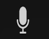
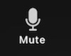
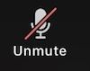

How to Mute and Unmute
In the bottom left corner of your screen, there will be a picture of a microphone

When you are NOT muted and people CAN hear you, your microphone looks like this

When you ARE muted and people CANNOT hear you, your microphone looks like this

To change whether you are muted or not, simply click the microphone on the bottom left of your screen